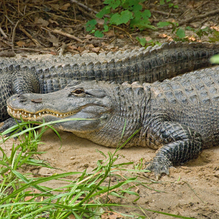
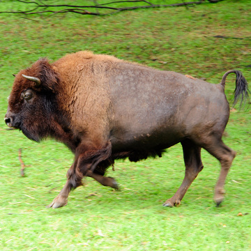
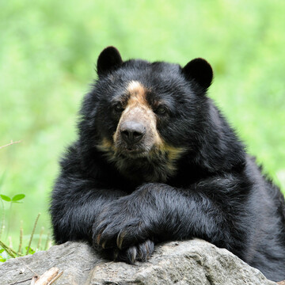
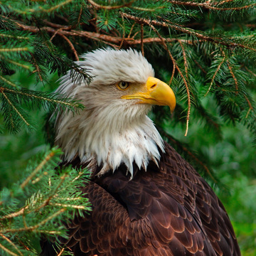
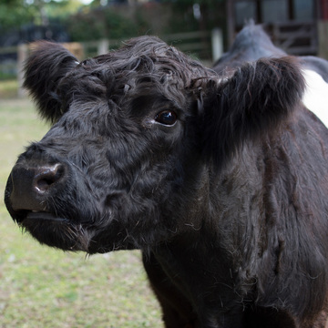
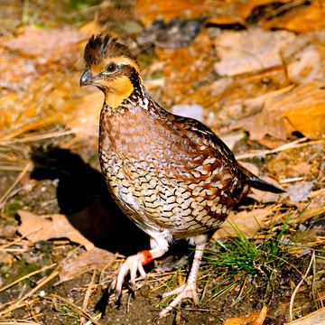
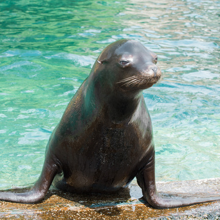
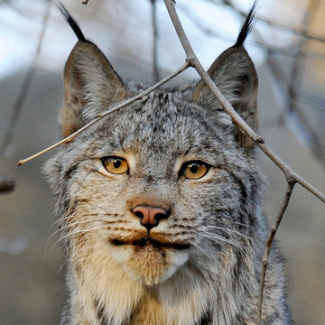
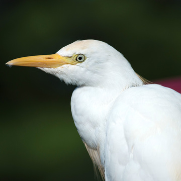

The American Alligator is the worlds largest alligator species. They are located near
the Wild Side exhibit.

The American Bison is an animal close to extinction, known for its ability to tolerate
temperatures below freezing.

The Andean Bear is the only bear native to South America, and they are the closest
living relative to the Giant Panda.

The Bald Eagle's at the Queens Zoo were rescued and live there as they can no longer
survive in the wild.

Belted Galloways are cows which coats have black and white colors similar to that of
oreos.

Bobwhite Quails can be identified by their rounded bodies, small heads, rounded wings,
and short tails. And are one of more than 20 birds from the Western Hemisphere.

California Sea Lions are sent to the Queens Zoo to provide them a home, giving them
enrichment to encourage natural behaviors.

The Canadian Lynx is the largest Lynx species of North America that inhabit the Rocky
Mountains.

The Cattle Egret is a bird that formed symbiotic relationships with grazing animals,
eating insects and other small prey.